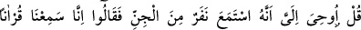
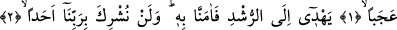
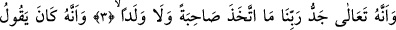
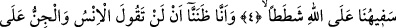
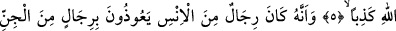
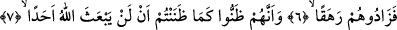

RABBİMİZE ASLA ORTAK KOŞMAYACAĞIZ
Bismillâhirrahmânirrahîm
1. (Rasûlüm!) De ki: Cinlerden bir topluluğun (benim okuduğum Kur’an’ı)
dinleyip de şöyle söyledikleri bana vahyolunmuştur: Gerçekten biz, hârikulâde
güzel bir Kur’an dinledik.
2. Doğru yola ileten (o Kur’an’a) îman ettik. (Artık) kimseyi Rabbimize asla
ortak koşmayacağız.
3. Hakîkat şu ki, Rabbimizin şânı çok yücedir. O, ne eş ne de çocuk edinmiştir.
4. Doğrusu bizim beyinsiz olanımız (iblis veya azgın cinler), Allah hakkında pek
aşırı yalanlar uyduruyormuş.
5. Hâlbuki biz, gerek insanlar gerekse cinler Allah hakkında asla yalan
söylemezler, sanmıştık.
6. Şu da gerçek ki, insanlardan bâzı kimseler, cinlerden bâzı kimselere sığınırlardı
da, onların taşkınlıklarını artırırlardı.
7. Onlar da sizin sandığınız gibi, Allah’ın hiç kimseyi tekrar diriltmeyeceğini
sanmışlardı.
“(Rasûlüm!)” Ey Muhammed! Kavmine “De ki: Cinlerden bir topluluğun” üçten ona
kadar bir grubun “onu” Kur’an’ı veya Tâ-hâ sûresini ya da İkra’/el-Alak sûresini
“dinleyip de şöyle dedikleri bana vahyolundu”, vahiy yoluyla bana bildirildi, Allah
Teâlâ’nın bildirme yoluyla bana haber verildi.
Vahy, bir şeyi gizlice bildirmek, demektir. Böyle bir hâdisenin Peygamber
Efendimiz’e haber verildiğinin bizlere bildirilmesinin faydası; Peygamber Efendimiz’in
hem insanlara hem de cinlere peygamber olarak gönderildiğini, şirki yasaklamak ve